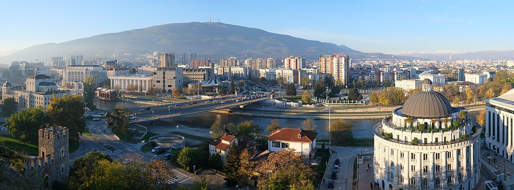

CityLoop Quest Dubrovnik


Dubrovnik n’est pas née en un jour ni sur un terrain facile. Le noyau le plus ancien se forma sur un rocher côtier appelé Laus ou Ragusium, séparé du continent par un chenal. Au VIIe siècle, les bouleversements qui touchèrent la cité antique d’Epidaurum, près de l’actuelle Cavtat, poussèrent une partie de la population à chercher refuge sur cette position plus facile à défendre. Des communautés slaves s’installèrent parallèlement sur les hauteurs voisines, dans un secteur nommé Dubrava, « la chênaie ».
Pendant plusieurs siècles, populations de langue romane et slaves vécurent face à face, puis de plus en plus ensemble. Le bras de mer qui les séparait fut progressivement comblé ; son tracé devint l’axe de Placa, aujourd’hui Stradun. Cette réunion topographique accompagne une fusion politique et culturelle. Le nom latin Ragusa resta longtemps utilisé dans la diplomatie occidentale, tandis que Dubrovnik s’imposa dans les langues slaves. Les deux noms racontent les deux rives de la ville primitive.
La petite communauté bénéficia de la protection byzantine, développa un évêché et fortifia son rocher. Sa position sur les routes entre Italie, Adriatique, Balkans et Levant favorisa très tôt les échanges. Les marins transportaient des marchandises, mais aussi des langues, des techniques et des informations. Le manque de terres agricoles poussa les habitants à valoriser ce qu’ils pouvaient contrôler : le port, les contrats, le crédit, la médiation entre puissances et une réputation de fiabilité.
Au Moyen Âge, la commune agrandit son territoire vers Astarea, les îles, Ston, Pelješac et les Konavle. Chaque acquisition répondait à une nécessité : assurer des cultures, protéger des routes, contrôler le sel ou éloigner une frontière dangereuse. Les murs urbains furent renforcés en même temps que se construisait un réseau de villages, de résidences d’été et de forteresses. Dubrovnik devint le centre d’un petit État beaucoup plus étendu que l’image enfermée dans les remparts.
Le développement urbain suivit des règles étonnamment précises. Des statuts du XIIIe siècle fixaient l’entretien des rues, les constructions, l’évacuation des eaux et la lutte contre les incendies. Après les catastrophes, les autorités reconstruisaient en imposant de nouvelles normes plutôt qu’en reproduisant exactement le passé. La ville actuelle est donc le résultat d’une série d’adaptations : le chenal devenu avenue, les maisons de bois remplacées par la pierre, les défenses médiévales transformées pour l’artillerie.
À la fin du Moyen Âge, Raguse possédait déjà les ingrédients de sa réussite : une élite politique disciplinée, une administration écrite, des marins expérimentés et la capacité de négocier avec des partenaires très différents. Cette origine mêlée explique l’identité de Dubrovnik. Elle n’est ni uniquement latine, ni uniquement slave, ni simple héritière d’Epidaurum ; elle s’est construite dans le contact, la traduction et l’art de transformer une contrainte géographique en avantage.